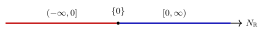

Example 5.1.1. We take $n=1$ and $P=[0,1]\subseteq M_{\mathbb {R}}=\mathbb {R}$. In this case, the facet representation (5.1) becomes
\[ P=\bigl \{ m\in \mathbb {R}: \langle m,1 \rangle \geq 0, \langle m,-1 \rangle \geq -1\bigr \} , \]
with $u_{\{ 0\} }=1$, $u_{\{ 1\} }=-1$, $a_{\{ 0\} }=0$ and $a_{\{ 1\} }=1$. The normal fan $\Sigma $ is
\[ \Sigma =\bigl \{ (-\infty ,0], \{ 0\} , [0,\infty ) \bigr \} . \]
See 5.1.

The corresponding toric variety is just $X=\mathbb {P}^1$. Under the orbit-cone correspondence, we have
\[ D_{[0,\infty )}=[0],\quad D_{(-\infty ,0]}=[\infty ]. \]
The associated divisor $D=[\infty ]$ and therefore,
\[ L=\mathcal{O}_ X(D)=\mathcal{O}_{\mathbb {P}^1}(1). \]